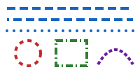

Icons drawn with a mask: a data URL in the text color, a file, contained in a wider box
A gradient mask (not supported: drawn without it):
An icon in the text, in the text color (currentColor), 16 px: and a line icon, 24 px:
Sized by CSS (2em): , without any size (300 × 150):
A link around an icon: again
Shapes at their natural size (200 × 100):
The same, 100 px wide:
An icon (viewBox only), 24 px: and 64 px:
Curves (C, S, Q, T):
Strokes: joins (miter, round, bevel) and caps (butt, round, square):
Dashes (stroke-dasharray, -dashoffset):

A line icon (round caps and joins), 24 px and 72 px:
The icon without a size: an SVG with only a viewBox has no size of its own, only an aspect ratio, so the image is as wide as the page: